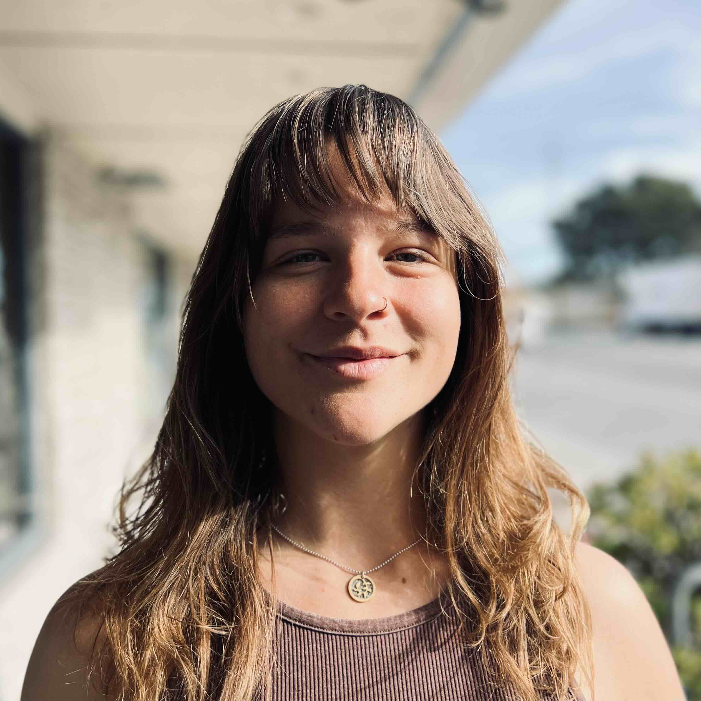

Hello! In the background of this website is a 3D render of the RYR1 protein, on which I performed structural and functional analysis during my Master's at Johns Hopkins University. I am an outgoing and detail-oriented scientist with theoretical and hands-on experience in molecular biology and genetic engineering, including over three years of experience in CRISPR plasmid design and cloning.
Homology modeling, structural alignment, and secondary structure prediction on the RYR1 protein. Final project for Protein Bioinformatics at Johns Hopkins University utilizing advanced structural bioinformatics tools.
Homology Modeling Structural Biology View on GitHubPredictive computational tools and data analysis to determine how protein-protein interactions, mutations, and post-translational modifications affect RYR1 protein function.
Protein Interactions Functional Analysis View on GitHubA Python-based web tool for pairwise sequence alignment visualization. Features interactive identification of genetic variants and database-backed approval workflows.
Python Genomics View on GitHub